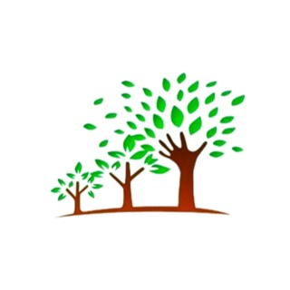

Pular para o conteúdo
Frutos do Amanhã
São Vicente · Praia Grande
Menu
Início
Quem somos
Projetos
Como ajudar
Notícias
Contato
Solicitar vaga
Seja voluntário
Fazer doação
Projetos
Carregando projeto...

Apoiar este projeto
Ver todos os projetos
Seu apoio mantém esse trabalho acontecendo
Faça uma doação pelo Mercado Pago e acompanhe o pagamento na sua conta.
Quero doar